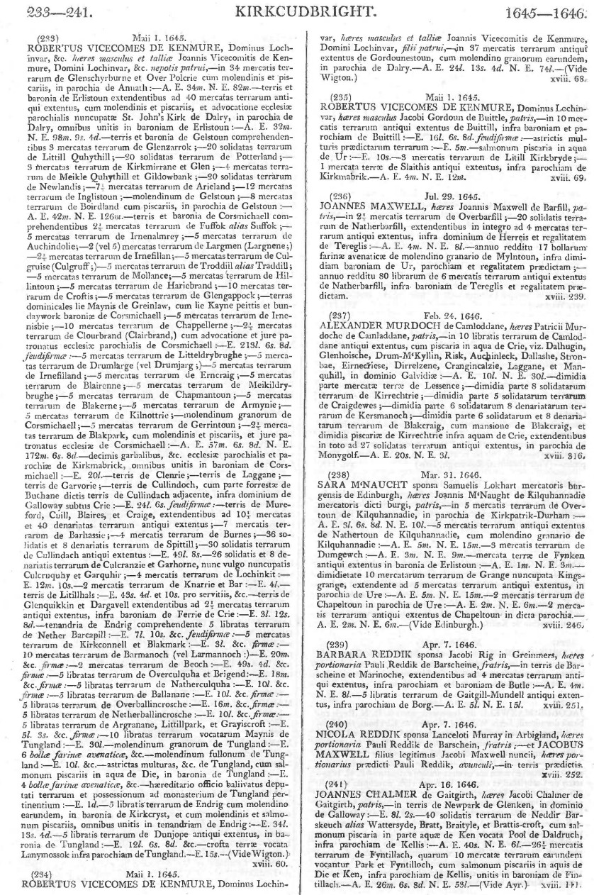
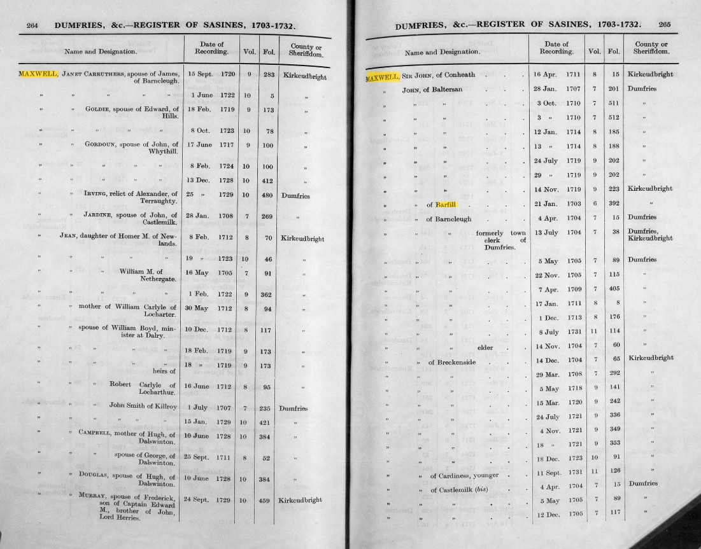
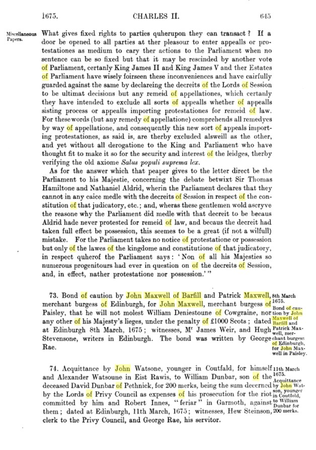
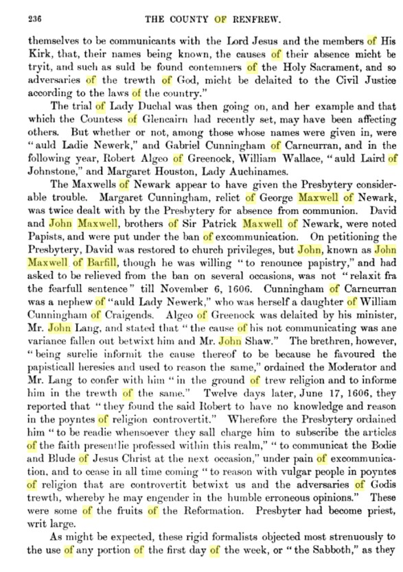
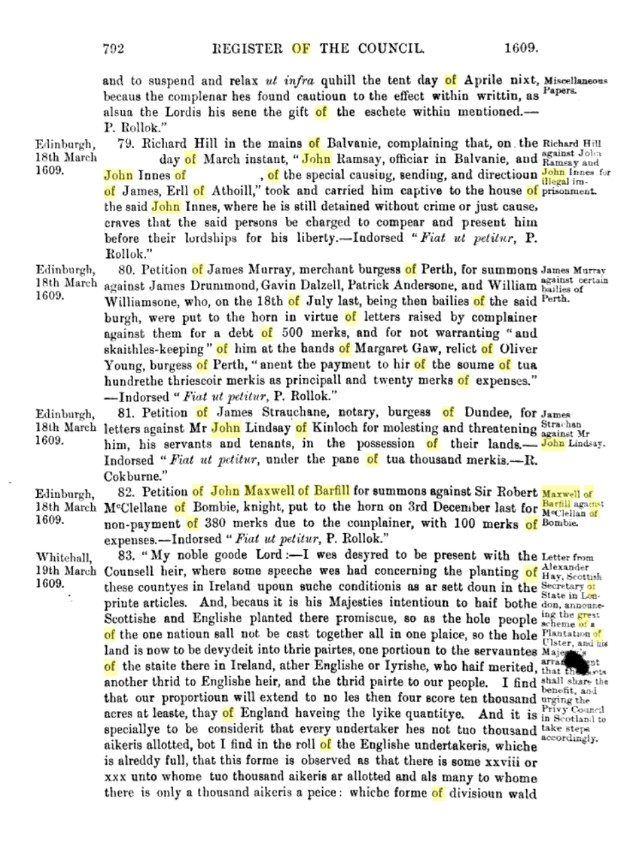
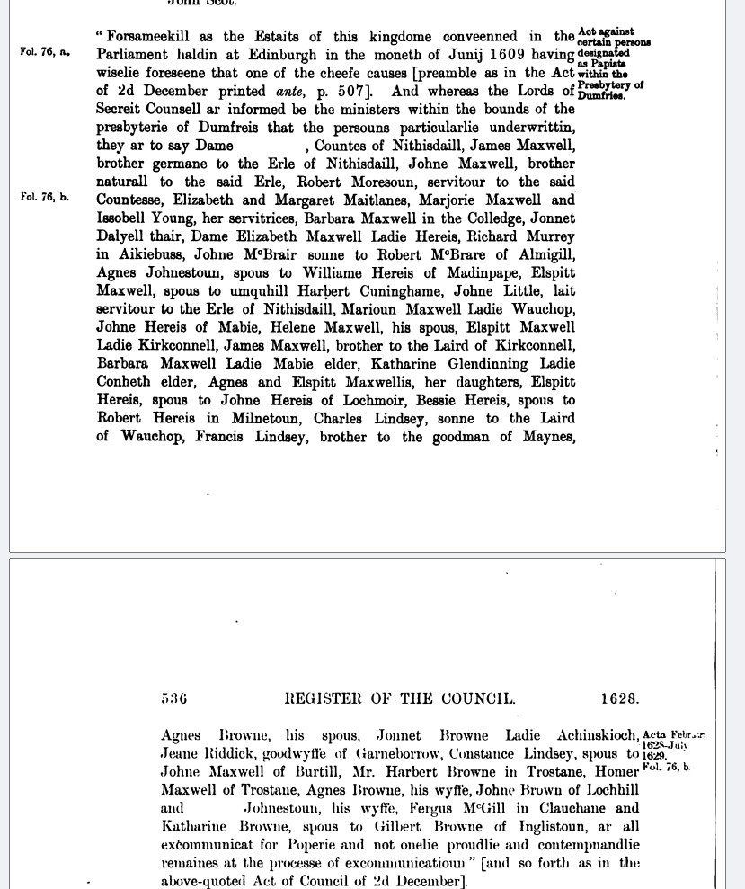

Maxwell Genealogy
Research Summary & Source Document Inventory · May 2026
FTDNA Kit 752085 · David B. Maxwell & James D. Maxwell
I am James D. Maxwell, son of David B. Maxwell (FTDNA kit 752085). I have been conducting research, mostly using ScotlandsPeople, the Dumfries Register of Sasines, the Scottish Register of Deeds, Dumfries Commissary Court testaments, the Register of the Privy Council of Scotland (1684), FamilySearch, and the Book of Caerlaverock.
Based on Donald Maxwell's research placing kit 752085 on the James Maxwell of Auchincairn branch (brother of Sir John Maxwell of Cowhill), confirmed by Jennifer Maxwell's BigY analysis showing kit 752085 on R-FTA17177 rather than R-BY24084 (Sir John's line), I think I might be close to fully completing my line. New research in the Scottish Register of Deeds and Register of Sasines has now confirmed John Maxwell elder of Barfill (wife Constance Lindsay) and John Maxwell younger of Barfill (father of Patrick b.1690) as two distinct generations in the same 1672 sasine. The American chain is fully documented. One generational gap remains.
This page summarises the research and links to every original source image.
| # | Person | Dates & Place | Status | Source |
|---|---|---|---|---|
| 1 | Undwin, father of Maccus | ~1070, Roxburghshire | ✓ | FT-4 |
| 2–11 | Lords of Maxwell (~12 generations) | 1070–1484 | ✓ | FT-4 |
| 12 | John Maxwell, Master of Maxwell | d. Battle of Kirtle, 22 Jul 1484 | ✓ | FT-4 ★ Y2357 SNP · GD2 from Caerlaverock |
| 13 | Robert Maxwell of Cowhill (FTA17177) | ~1460–c1513 · XIII in our chain · XIV per Don's chart (counting from Robert Maxwell of Caerlaverock) | ✓ | FT-7 DNA-1 DNA-2 |
| 14 | James Maxwell of Auchincairn Son of Robert Maxwell of Cowhill · brother of Sir John Maxwell of Cowhill (BY24084 line) |
born ~1495–1510 · generation XIV per Don's chart · FTA17177 without BY24084 | ✓ DNA | DNA-2 ⭐ DNA-1 BigY confirms kit 752085 on this branch. All subsequent generations are proposed — confirmed to exist, but not confirmed as direct ancestors of kit 752085. |
| ? | [Unnamed son(s) of James Maxwell of Auchincairn] One or more intermediate generations probable |
born ~1530–1560 · no surviving record ~100 years separates James (~1500) from Edward's death (1604–1605). At least one intermediate generation is probable. |
● Probable | Inferred from generational arithmetic · no documentary attestation |
| 15 | Edward Maxwell of Auchincairn Wife: Rosina Wallace · Lands: Auchincairne, Quhytstanes, Bukrig |
d. between 29 Jun 1604 and 22 Aug 1605 Confirmed to exist · proposed as ancestor of kit 752085 |
● Proposed | WILL-0 ⭐ Named as deceased; minor sons William & Alexander in wardship; widow Rosina Wallace; lands listed. |
|
↕ THE GAP — Edward Maxwell of Auchincairn (d.1604–1605) → [John Maxwell of Barfill, gen 16b] ↕ RET-2 (1645 retour) documents a John Maxwell of Barfill who died before 1645 and whose heir was John elder. EXPL-3 (1609) supplies a John Maxwell of Barfill active in Kirkcudbrightshire a generation earlier; the two are very likely the same man = gen 16b. The single remaining unknown is 16b's own parentage. The most economical reading is that 16b was an adult son of Edward of Auchincairn, not covered by WILL-0's wardship clause (which names only the minor sons William and Alexander). The Alexander-of-Kirkmahoe route (WILL-1a) is retained as a secondary alternative only. Priority: full NRS text of the 1645 retour (Vol. XVIII, p.239) and the 1664 Tack (Register of Deeds Vol.11, p.941) may name 16b's parentage directly. |
||||
| possible | Alexander Maxwell, Towbill-hill, Kirkmahoe (d. Nov 1625) Secondary alternative to the Edward → 16b route · could at most be a parent of gen 16b, never John elder's direct father (RET-2 names a John of Barfill, not Alexander) |
See WILL-1a · sons John and Thomas · two unproven links to reach John elder | ? Possible | Not placed in main chain · retained as possible intermediate · see WILL-1a |
| 16b |
[Unnamed] John Maxwell of Barfill
Father of John Maxwell elder of Barfill · held Overbарfill & Natherborfill, regality of Terregles · his own parentage unknown — candidate generation between Edward of Auchincairn and John elder |
born ~1570–1585 · d. before 29 Jul 1645 Existence documented (RET-2); active 1609 (EXPL-3); parentage unattested |
● Probable ? Parentage unknown |
RET-2 ⭐ (1645, named as deceased father) · EXPL-3 (1609, likely this man). Held Overbarfill, Natherbarfill, Terregles. 16b's existence is documented; only his parentage is unattested. Full NRS retour manuscript not yet examined. |
| 17 | John Maxwell elder of Barfill Wife: Constance Lindsay · Papist, excommunicated 1628–1629 Parentage unknown — the gap above |
born ~1600–1610 · at Barfill and married by 1628 · active in deeds 1662–1672 · d. ~1672–1675 Confirmed as ancestor from Patrick upward · parentage unattested in any document |
✓ Confirmed ? Parentage unknown |
DEED-1 ⭐ · SASE-2 ⭐ · EXPL-4 (1628–29, at Barfill) |
| 18 | John Maxwell younger of Barfill, Holywood Wife: Margaret daughter of John Thomson |
born ~1650–1658 · sole holder of Barfill from ~1672–1675 after elder's death · active through 1703 1672–1677: Kirkcudbright sasines = Kirkcudbright Barfill estate · moved to Holywood parish by 1690 · retained "of Barfill" designation · 1694 Dumfries sasine = new parish/local holding |
✓ | SASE-2 ⭐ (1672 & 1675) · OPR-B2 ⭐ (Patrick 1690) · SASE-4 (1703) wife: Elizabeth Maxwell (1675 sasine), then Margaret Thomson (1690) |
| 19 | Patrick Maxwell | b. 14 Sep 1690 · Holywood · d. 23 Jan 1728 · Stirling Merchant and church elder in Stirling |
✓ | OPR-B2 ⭐ (birth) OPR-D1 (death) father: John Maxwell younger of Barfill · mother: Margaret dau. of John Thomson |
| 20 | John Maxwell | b. 25 May 1726 · Stirling · d. ~28 Jan 1787 · Stirling · age ~61 | ✓ | OPR-B1 (birth) OPR-D2 (burial) parents: Patrick Maxwell & Janet Burd |
| 21 | Adam Maxwell | b. 20 August 1749 · Stirling, Scotland | ✓ | OPR-B0 ⭐ Stirling Associate congregation · parents: John Maxwell & Mary Finlayson |
| 22 | David Maxwell | b. ~1798 · d. 1830, Armstrong Co., PA | ✓ | FT-1 FT-2 |
| 23 | Samuel H. Maxwell | b. 23 Feb 1833 Pennsylvania · m. Mary E. Dinsmore | ✓ | FT-1 |
| 24 | Mack Young Maxwell | b. 15 Jul 1864, Pike Co., Ohio · d. 8 Jun 1942 | ✓ | FT-1 |
| 25 | Ralph Edgar Maxwell | b. 7 Jan 1887, Jackson Co., Ohio · d. 23 Jan 1942 | ✓ | FT-1 |
| 26 | Ralph Davis Maxwell | b. ~1925, Ohio | ✓ | FT-1 |
| 27 | David B. Maxwell | Kit 752085 | ✓ | FTDNA |
| 28 | James D. Maxwell | Son of David B. Maxwell | ✓ | — |
| 29 | Ralph Davis Maxwell & Charles Leo Maxwell | Sons of James D. Maxwell | ✓ | — |
The two Barfills — working hypothesis. The evidence is best explained if the family held two distinct properties sharing the name: (1) a Kirkcudbrightshire landed estate — Overbarfill and Natherbarfill, regality of Terregles (RET-2, the 1645 retour) — source of the "of Barfill" designation and the reason the 1662–1677 and 1703 sasines carry Kirkcudbright county; and (2) a residential farm also called Barshill/Barfill in Holywood parish, Dumfriesshire (RPCS 1684 list; 1691 Hearth Tax), where the family lived by 1684–1690 and where the 1694 Dumfries-county sasine was registered. This single inference reconciles the otherwise puzzling Kirkcudbright↔Dumfries county switches across the sasine sequence. It rests on the name coincidence plus the county pattern — no document yet states the two were held by one family — so it is the document's central working hypothesis, not an established fact. To verify: confirm Over/Nether Barfill (Terregles) is distinct from Meikle/Little Barfill, Kirkpatrick Durham (WILL-X1). Note that the contracted form "Overbar" is not diagnostic — a separate Gordon-held "Overbar" sits in Kirkpatrick Durham parish (NRS GD90/1/279); only the full name Overbarfill, regality of Terregles reliably identifies this line's estate. See WILL-X1.
BigY confirms the Auchincairn branch — R-FTA17177 vs R-BY24084. Jennifer Maxwell's BigY analysis (May 2026) places kit 752085 on R-FTA17177 (~1450 CE). The Broomholm ancient line kit sits on the child branch R-BY24084 (~1500 CE). Don's chart (DNA-1) explicitly labels FTA17177 as Robert Maxwell of Cowhill (XIV) and BY24084 as the mutation in Sir John Maxwell's line (XV, born 1500). Kit 752085 does not carry BY24084, meaning its ancestor was Robert's son who was Sir John's brother — James Maxwell of Auchincairn — confirming Don's prediction. The BigY was already complete; no upgrade needed.
John Maxwell elder and younger of Barfill — confirmed in one sasine. The Dumfries & Kirkcudbright Register of Sasines index (pp.264–265) shows both "John, of Barfill, elder" and "John, of Barfill, younger" recorded on the same date (8 May 1672) at the same folio (Vol.1, Fol.133). The Lindsay index (p.206) for the same document names Constance Lindsay as wife of the elder. Patrick's 1690 baptism (OPR-B2) gives Margaret Thomson as wife of John of Barfill. Two different wives = two different men. The younger (father of Patrick) is the son of the elder (husband of Constance).
Three Johns of Barfill, not two. The line runs grandfather → father → son, all styled "of Barfill": gen 16b (d. before 1645, RET-2/EXPL-3), John elder (gen 17), and John younger (gen 18). The "elder/younger" labels come from the single 1672 sasine and distinguish only the latter two. For every other "John of Barfill" in the record — including non-line and uncertain ones — see the disambiguation table in the Explorations section.
John Maxwell elder at Barfill from at least 1662 — Kirkcudbright county throughout. Register of Deeds indexes (FamilySearch) show John of Barfill in bonds dated 1662 (Vol.4, pp.211, 874), a Tack in 1664 (Vol.11, p.941 — possibly the original lease), and a bond in 1667 (Dal., Vol.15, p.48). All 1662–1677 sasine entries carry Kirkcudbright county. The 1694 sasine switches to Dumfries county, by which time only John younger remained; the 1703 entry returns to Kirkcudbright, confirming he retained the Kirkcudbright estate to the end of his life. The "of Barfill" designation derived from the family's Kirkcudbright estate (Terregles); they resided on a separate Holywood farm of the same name — see the note on the two Barfills in the Research Summary.
The gap is now a single link: Edward of Auchincairn → gen 16b. RET-2 (the 1645 retour) documents a John Maxwell of Barfill who died before 1645 and whose heir was John elder; EXPL-3 (1609) supplies a John Maxwell of Barfill active in Kirkcudbrightshire a generation earlier. These are very likely the same man (gen 16b). The only unknown is 16b's own parentage — most economically an adult son of Edward of Auchincairn not covered by WILL-0's minor-sons wardship clause. Alexander Maxwell of Kirkmahoe (WILL-1a) is retained as a secondary alternative, not the preferred route, because RET-2 names a John of Barfill as the father, which Alexander cannot be.
"Barfie" is a misreading of "Barſill." The palaeography is explained in RPCS-1: in Secretary hand, the long ſ was misread as f; the three variant spellings (Barfill · Barshill · Barfie) all refer to the same Holywood farm. See RPCS-1.
The Stirling Associate congregation error on FamilySearch. Adam Maxwell's 1749 baptism is indexed as "Erskine, Renfrewshire" — wrong. The congregation was the Stirling Associate church in Stirling (CH3/559/17), founded 1733 by Rev. Ebenezer Erskine.
The sources below are sequenced to build the case from DNA frame downward: branch identity → Auchincairn origin and territorial frame → the newly documented gen 16b → the John elder & younger Barfill record → the Holywood residence and Patrick's birth → the Stirling generations and hand-off to America. The ⭐ marker is reserved for records that each carry the proof of one specific link in the direct line; cards without it are corroborating, contextual, or alternative evidence.
 FT-4
FT-4
Maxwell BIG-Y SNP Family Tree Chart ✓
File: BigYresultsLordMaxwelljan2025__1_.jpg · maxwell-dna.com, version Jan 2025


Don Maxwell's Group 6.48 Chart — Auchincairn Placement ✓
Provided by Dr. Donald Maxwell · May 2026 · Two views of the same chart
The chart shows three distinct groups: (1) Broomholm (far left) — under BY24084 → Archibald IV → John first of Broomholm; (2) Cowhill cluster (middle) — under BY24084 → various Cowhill descendants; (3) Auchincairn (far right, kit 752085) — under FTA17177 only, no BY24084. The Broomholm and Cowhill coats of arms appear in their respective clusters; kit 752085 stands alone.
Note on names: Don's email predicts the line runs through "Edwards minor sons Alexander and Edward." The actual wardship clause in WILL-0 (p.695) names William and Alexander, not Edward. Don's DNA placement is unaffected by this — kit 752085 is still on the Auchincairn branch — but the prose prediction misstates the names. The correct minor sons are William and Alexander Maxwell.
 DNA-2 ⭐
DNA-2 ⭐
Jennifer Maxwell — FTDNA & Ytree Annotated Charts — May 2026 ✓ ⭐
Provided by Dr. Jennifer Maxwell · May 2026 · Screen captures from FTDNA and Alex Williamson's Ytree.net
Kit 752085 is the rightmost kit on both the FTDNA haplotree and the Ytree chart. BigY already completed — David Maxwell is on both platforms. No upgrade needed.
Jennifer's email: "The Broomholm kit is a proven lineage (he can trace his line back without any missing generations). You and your dad have the Y2357 SNP and then the Broomholm kit branches off from your branch (FTA17177) after your and your dad share it with him."
Why this is the load-bearing DNA card. FT-4 and DNA-1 (above) corroborate, but DNA-2 carries the direct annotated FTDNA evidence that kit 752085 sits on R-FTA17177 and not the child R-BY24084 — the single fact on which the entire Auchincairn-branch placement (gen 14 in the chain) rests.


Book of Caerlaverock — Cowhill & Barncleuch Pages ✓
Fraser, 1873 · pp.594–595 and pp.602–603
 FT-3
FT-3
Maxwells of Cowhill Chart — 19 June 2020 Context
File: Maxwells_of_Cowhill_Chart.pdf · Published 19 June 2020
Documents the main Cowhill cadet branch from Robert Maxwell of Cowhill (c1460). Confirms Sir John Maxwell of Cowhill (c1500–1547) as son of Robert. The chart does not show the Auchincairn branch — James Maxwell of Auchincairn (Sir John's brother) is not represented, consistent with it being a collateral line outside the main Cowhill descent.
These three documents together establish the top of the proposed chain. WILL-0 names Edward Maxwell of Auchincairn as the deceased ancestor whose minor sons came under Cowhill wardship. RET-3 confirms the Auchincairn lands' parish and barony, and shows they had left Maxwell hands by 1647. RET-4 places Archibald of Cowhill's own estate directly in Holywood and Kirkmahoe — the two parishes that figure in every subsequent step of the line.
Testament of Archibald Maxwell of Cowhill, 1607 ✓ ⭐
Edinburgh Commissary Court · CC8/8/43, pages 692–697 · Registered 1607
Transcript (p.695, ll.28–29): "J lave to him the waird[is] and mariages of w[ilia]m and allex[ande]r maxwell[is] Law[fu]ll sones To vmq[uhi]ll edward maxwell of auchincairne."
Edward of Auchincairn: widow named as Rosina Wallace (p.695, l.33). Lands listed: Auchincairne, Quhytstanes (Whytestanes), and Bukrig. A debt entry names "John Johnstoun, younger, of Quhytstanes" — suggesting the Whytestanes land was tenanted by a Johnstone at his death. Death date tightened to between 29 June 1604 (contract with Rosina Wallace recorded) and 22 August 1605 (will written).
Note on Don's prediction: Don's email states "Edwards minor sons Alexander and Edward." The actual will names William and Alexander — not Edward. Don's DNA placement of kit 752085 on the Auchincairn branch is independent of this detail and unaffected; only the prose description needed correction.
Note on two Edwards: Archibald's own son Edward (500 merks legacy, p.696) is an entirely different person from Edward Maxwell of Auchincairn. The document distinguishes them clearly; this page does too.
Date discrepancy in the original: The testament header (p.692) implies it was given up on 22 August 1606, but the latter-will section (p.697, l.23) clearly dates the writing to 22 August 1605. The testament was most likely written in August 1605 by Archibald (who died September 1606) and confirmed in the Commissary Court in 1607 — the header date is probably a scribal error in the original.
Territorial context confirmed by RET-4: Archibald Maxwell of Cowhill — the same man who held the wardship of William and Alexander Maxwell in this testament — is retoured in the Dumfries Inquisitionum Abbreviatio (entry 68, 25 Jan. 1609) as holding the upper portion of Portrack in Holywood parish (where Barfill was) and lands in Kirkmahoe parish (where Alexander Maxwell of Towbill-hill died in 1625). The Cowhill estate had a direct territorial presence in both parishes central to the proposed Auchincairn → Barfill chain. See RET-4.
Inquisitionum Abbreviatio — Kirkcudbright Retour No. 248, 27 Feb. 1647 ✓
Inquisitionum ad Capellam Regis Retornatarum Abbreviatio · Kirkcudbright section, entry 248 · Original: NRS Chancery Records, Vol. XIX, p. 25 · Image uploaded by researcher, May 2026
Translation: Edward Cairnes of Tar, heir to Robert Cairnes of Tar, his father — in the lands of Auchincairne with the Stallange, 20 solidates of Tar, and 5 solidates of Talli of Forrest, in the barony of Dundrennan and parish of Rerrick.
Parish and barony confirmed. This retour definitively places the Auchincairne lands in Rerrick parish, barony of Dundrennan, Kirkcudbrightshire — the modern Auchencairn village. No ambiguity remains about which Auchincairn Edward Maxwell of Auchincairn held.
Lands have left Maxwell hands by 1647. The Auchincairne lands are held by the Cairnes family of Tar — not any Maxwell — when this retour is filed. The transfer from Maxwell to Cairnes took place between Edward Maxwell's death (1604–05) and 27 February 1647. No Maxwell retour for Auchincairne, Quhytstanes, or Bukrig appears anywhere in the Kirkcudbright section of the Inquisitionum Abbreviatio, confirming that Edward's sons William and Alexander disposed of the lands (by sale or feu) rather than inheriting them through a retour.
"Cum lie Stallange" — the Stallange is an additional land feature (possibly a fishing stance or boundary strip) attached to Auchincairne not previously documented in the inventory. Useful as an additional search term for any disposition records.
Priority action: The disposition or sasine transferring Auchincairne from Maxwell to Cairnes should exist in either the Kirkcudbright Register of Sasines or the Register of Deeds, and will name the Maxwell who sold or disponed the land — almost certainly William or Alexander Maxwell (Edward's minor sons named in WILL-0). Search the Kirkcudbright Register of Sasines and Register of Deeds for Cairnes/Cairns acquisitions of Auchincairne, c.1605–1647. The Cairnes of Tar family may also have their own papers or a testament that names the seller.
Inquisitionum Abbreviatio — Dumfries Retour No. 68, 25 Jan. 1609: Archibald Maxwell of Cowhill ✓
Inquisitionum ad Capellam Regis Retornatarum Abbreviatio · Dumfries section, entry 68 · Jan. 25, 1609 · Images uploaded by researcher, May 2026
This is the Dumfries section retour for the same Archibald Maxwell of Cowhill who appears in Kirkcudbright retour entry 83 (also Jan. 25, 1609 — same day, same retour filed in both counties) and whose 1607 testament (WILL-0) names Edward Maxwell of Auchincairn and the wardship of his minor sons William and Alexander. Archibald held landholdings straddling the Kirkcudbright/Dumfries county boundary.
Holywood (Halywode) — direct territorial overlap with Barfill. Archibald held the upper portion of Portrack in Holywood parish — the same parish where John Maxwell elder of Barfill was established by 1628, and where the Barfill farm itself sat. The Cowhill estate had a direct territorial footprint in Holywood, placing the Barfill Maxwells within or immediately adjacent to the Cowhill Maxwell sphere of influence.
Kirkmahoe (Kirkmahoce) — direct territorial overlap with Alexander Maxwell. Archibald also held lands in Kirkmahoe parish — the same parish where Alexander Maxwell of Towbill-hill died in 1625 (WILL-1a), and where the proposed intermediate generation between Edward of Auchincairn and John elder of Barfill was based. The Cowhill estate had a presence in Kirkmahoe as well as Holywood.
Significance for the gap. The geographic clustering is consistent with a kinship-based connection, though estate proximity alone does not establish descent. Edward Maxwell of Auchincairn's sons were under the guardianship of Archibald of Cowhill (WILL-0). Archibald's own estate included lands in both Holywood (where Barfill was) and Kirkmahoe (where the proposed intermediate Alexander Maxwell was). A son or grandson of Edward settling in Holywood would have been moving within familiar Cowhill territorial territory — consistent with the Auchincairn → Barfill route being kinship-based.
Note on Homer Maxwell. Entry 81 on the same Dumfries page mentions Homerus Maxwell in lands at Demsterton, parochia de Dunscoir — consistent with the Homer Maxwell (ancestor of Maxwells of Portrack) referenced in the BigY chart (DNA-1) as a collateral Cowhill-branch figure. Contextual only.
The single most important find of May 2026. The 1645 Kirkcudbright retour reveals that John Maxwell elder of Barfill — long taken to be the first Barfill Maxwell — was himself the heir to a previously unknown John Maxwell of Barfill (gen 16b), holding the same Terregles lands. That unnamed father is the leading candidate to be the unattested adult son of Edward of Auchincairn, narrowing the gap to a single link.

RET-2 ⭐Inquisitionum Abbreviatio — Kirkcudbright Retour No. 236, 29 July 1645 ✓ ⭐
Inquisitionum ad Capellam Regis Retornatarum Abbreviatio · Kirkcudbright section, entry 236 · Original: NRS Chancery Records, Vol. XVIII, p. 239 · Image uploaded by researcher, May 2026
Translation: John Maxwell, heir to John Maxwell of Barfill, his father — in the lands of Overbарfill and Natherborfill, in the regality of Terregles (Kirkcudbrightshire). The heir (John) is almost certainly John Maxwell elder of Barfill (born ~1600–1610, at Barfill by 1628), inheriting from a father who was also designated "of Barfill" and who died before 29 July 1645.
Significance: This retour reveals a previously unattested generation — a father of John elder, himself called John Maxwell of Barfill, who held Overbарfill and Natherborfill in the regality of Terregles. Born perhaps ~1570–1585, this man is the right generation to be a son or grandson of Edward Maxwell of Auchincairn (d. 1604–05) and materially narrows the gap. He does not appear in any previously examined document and his parentage is unknown.
Also on the same page — Entry 240 (7 Apr. 1646): "JACOBUS MAXWELL filius legitimus Jacobi Maxwell nuncii, hæres Jacobi Maxwell prædicti Pauli Reddik, avunculi" — James Maxwell, legitimate son of James Maxwell (messenger), heir to James Maxwell [and] Paul Reddik, his uncle, in the same lands. Contextual; relationship to the Barfill line unconfirmed.
Full original text: The printed abstract (Vol. XVIII, p. 239) is the source; the full retour manuscript is held at NRS. Priority: order the full text of retour no. 236 from NRS Chancery records to confirm the precise land designations and check for any additional naming of the deceased father's own parentage.
Cross-reference: EXPL-3 (1609). A John Maxwell of Barfill petitions the Privy Council in Kirkcudbrightshire in March 1609 — the right generation and geography to be gen 16b. See EXPL-3 in the Explorations section for the identification argument.
The Register of Deeds (1662–1667) puts John elder at Barfill before the famous 1672 sasine, which then captures elder and younger as father and son in a single document. The sasine record continues to 1703 — a 41-year span tying two generations to the same Kirkcudbrightshire estate.


Register of Deeds — John (elder) of Barfill, 1662–1667 ✓ ⭐
Scottish Register of Deeds (Books of Council and Session) · FamilySearch index · 1662 (pp.400–401) · 1664 (pp.310–311) · 1667 (pp.288–289)
— Bond · 20 Feb 1662 · Vol.4, p.211
— Bond of Corroboration · 17 June 1662 · Vol.4, p.874
— Tack (lease) · 16 Dec 1664 · Vol.11, p.941
— Bond · 1667 · Dal., Vol.15, p.48
All four are John Maxwell elder of Barfill (Grantor), years before he is first explicitly distinguished as "elder" in the 1672 sasine. The 1662 Bond of Corroboration (confirming a pre-existing obligation) implies activity at Barfill even before 1662. The 1664 Tack — a Scottish land lease — may be the original lease of the Holywood Barfill farm and is a priority for NRS retrieval: its full text (Vol.11, p.941) could name the granting landlord and possibly John elder's father or origin.
Collateral context. John of Broomholm appears on the 1662 page (Bond, 2 Nov, Vol.12, p.471) — the Broomholm line (R-BY24084) and Barfill line (R-FTA17177) active simultaneously in the same register. Page 400 also names "James Maxwell, son of Edward M. of Balmangane" (Balmangan, Kirkcudbrightshire — the Lamingtoun/Newlaw/Balmangan network). Page 311 records a different family for completeness: "[Thomas Maxwell?], son of John M., elder, cordiner, Dumfries."


Maxwell & Elizabeth Maxwell Sasines Index — Barfill Sequence 1672–1694 ✓ ⭐
Dumfries & Kirkcudbright Register of Sasines 1672–1702 · Published index · Pages 254 and 264–265
— John, of Barfill, elder · 8 May 1672 · Vol.1, Fol.133 · Kirkcudbright
— John, of Barfill, younger · 8 May 1672 · Vol.1, Fol.133 · Kirkcudbright
Same date, same volume, same folio — both in one document, confirming father-and-son relationship.
— John, of Barfill (bis) · 4 May 1675 · Vol.1, Fol.361 · Kirkcudbright
— John, of Barfill · 25 Oct 1677 · Vol.2, Fols.242–243 · Kirkcudbright
— John, of Barfill · 25 Oct 1694 · Vol.5, Fol.222 · Dumfries (county switches — elder dead by now)
Constance Lindsay named here too. The Lindsay index for the same folio (p.206) records "Lindsay, Constance, spouse of John Maxwell, elder of Barfill — 8 May 1672, Vol.1, Fol.133, Kirkcudbright" — fixing Constance as the elder's wife in the very document that distinguishes elder from younger. Page 207 also shows "Mary Maxwell, spouse of Thomas [Lindsay], merchant, Dumfries — 21 May 1689", possibly a daughter of John elder and Constance marrying back into the Lindsay family.
Elder's last entry is 1672. Born ~1600–1610 and no longer distinguished as "elder" after that date, he almost certainly died between 1672 and 1675. All Barfill entries from 1675 onwards are John younger alone.
Two properties, both called Barfill — now clarified. The family held a Kirkcudbrightshire landed estate (Overbарfill and Natherborfill, in the regality of Terregles — confirmed by RET-2, the 1645 retour) and separately resided on a farm called Barshill/Barfill in Holywood parish, Dumfriesshire (confirmed by the RPCS 1684 Holywood parish list and the 1691 Hearth Tax). These are two distinct properties that happen to share the same name. The "of Barfill" designation derived from the Kirkcudbright estate, consistent with Scottish naming convention attaching a laird's title to his principal holding rather than his place of residence. The Kirkcudbright county on the 1662–1677 sasines reflects transactions on that Kirkcudbright estate. The 1694 shift to Dumfries county reflects a transaction on the Holywood farm, by which point John younger was primarily resident there. The 1703 return to Kirkcudbright (SASE-4) confirms he retained the Kirkcudbright estate into old age. Patrick's 1690 baptism in Holywood parish OPR (parish 830, not OPR 821 Dumfries) confirms the family was resident in Holywood by then.

SASE-4John Maxwell of Barfill — 1703 Sasine, Extending the Record ✓
Dumfries & Kirkcudbright Register of Sasines 1703–1732 · Published index · Page 265
This entry extends the record to 1703. John younger (born ~1650–1658) would be roughly 45–53. The "of Barfill" designation derived from the family's Kirkcudbright estate (Terregles); they resided on a separate Holywood farm of the same name — see the note on the two Barfills in the Research Summary.
The same index page shows contemporaries active in the same network: John Maxwell of Baltersan, John Maxwell of Barnecleugh, John Maxwell of Breckenside, and Sir John Maxwell of Conheath — placing John of Barfill within a well-documented Dumfriesshire-Kirkcudbright Maxwell community in the early 18th century.
By 1684 the family is resident on the Holywood farm (Barfill / Barshill / Barfie — three spellings of one place). Patrick's 1690 baptism names John younger and Margaret Thomson, providing the hinge that links the Barfill record to the Stirling generations.
Holywood Parish List, August 1684 — RPCS Third Series, Vol. IX, p.300 ✓
Register of the Privy Council of Scotland, Third Series, Vol. IX (June–September 1684), ed. H. Paton · HathiTrust mdp.35112103825610 · Page 300 (section 89)
Other Holywood Maxwells confirmed in this list: Robert Maxwell of Killilung (wife Janett Milligan) · Edward Maxwell of Muligounton · Robert Maxwell of Steelston · Robert Maxwell of Bearcroft · multiple Maxwell wives throughout. Barfill is the only unnamed holding in the complete list.
Farm name confirmation: "Barfill" (RPCS 1684) + "Barshill" (Hearth Tax 1691) + "Barfie" (OPR 1690, misread) all refer to the same farm. Situated between Hulton and Portrack in the parish's geographical sequence.
 OPR-B2 ⭐
OPR-B2 ⭐
Patrick Maxwell Baptism — Holywood, 1690 ✓ ⭐
OPR 830 (Holywood) · Page 24 · Reference 10/24 · Image generated 13 May 2026
Witnesses: Robert Wingate D.G. and George Jaffrey. "Holywood" is the parish, not a farm. The "of Barfill" designation derived from the family's Kirkcudbright estate (Terregles); they resided on a separate Holywood farm of the same name — see the note on the two Barfills in the Research Summary. ("Barfie" in this OPR entry is a misreading of "Barſill" — see RPCS-1.)
The pivotal hand-off record. This baptism is the single document that ties John Maxwell younger of Barfill (gen 18) to Patrick Maxwell (gen 19), who moves to Stirling and from whom the rest of the Scottish chain — and ultimately Adam — descends. Without OPR-B2 the Barfill record and the Stirling record would not be linked.
 OPR-B3
OPR-B3
William Maxwell Baptism — Holywood, 1694 ✓
OPR 830 (Holywood) · Page 72 · Reference 10/72
Confirms Patrick's sibling; confirms John Maxwell of Barfill was still in Holywood in 1694.
 OPR-M1
OPR-M1
Robert Maxwell of Porttrack & Violet Craik — Holywood, 1696 ✓
OPR 830 (Holywood Marriages) · Page 84
Confirms Porttrack estate active in Holywood parish — Homer Maxwell/Portrack branch. Robert Maxwell of Porttrack and John Maxwell of Barfill were neighbours in the same small parish.
By 1726 Patrick has moved from the Holywood farm to Stirling and established himself as a merchant. His son John baptises Adam in the Stirling Associate congregation in 1749 — the final Scottish record before Adam emigrates to Pennsylvania.
 OPR-B1
OPR-B1
John Maxwell Baptism — Stirling, 1726 ✓
OPR 490 (Stirling) · Page 425 · Reference 20/431
 OPR-D1
OPR-D1
Patrick Maxwell Death — Stirling, 23 January 1728 ✓
OPR 490 (Stirling) · Deaths · Page 13 · Reference 50/13 · Image generated 17 May 2026
Significance: Confirms Patrick's presence in Stirling and gives his death date — less than two years after his son John's baptism there in May 1726 (OPR-B1). Patrick had established himself as a merchant and session elder in Stirling, a step up socially from the farming tenants at Barfill. This record closes the bracket on Patrick's life: born in Holywood 1690, died in Stirling 1728.
The "Elder" designation indicates Patrick held a formal position in the Stirling church session — consistent with the family moving from the Associate congregation (where son John's children were baptised) or the established Kirk.
 OPR-B0 ⭐
OPR-B0 ⭐
Adam Maxwell Baptism — Stirling Associate Congregation, 1749 ✓ ⭐
CH3/559/17, page 187 · Stirling Associate Congregation · Image generated 13 May 2026
Adam Maxwell born 20 August 1749, baptized 27 August 1749, Stirling. Father: John Maxwell. Mother: Mary Finlayson.
Siblings in same register: John (1748), Margret (1751), Bolkrak/Barbara (1753), Daniel (1756), Katharine (1760).
The hinge to the American line. Adam emigrates and settles in Buffalo Township, Armstrong County, PA — see the American Line document. This baptism is the final Scottish record naming him, and the only one connecting him to John Maxwell and Mary Finlayson as parents.
⚠ FamilySearch error: Indexed as "Erskine, Renfrewshire" — wrong. The Stirling Associate church was founded in Stirling by Rev. Ebenezer Erskine in 1733.
 OPR-D2
OPR-D2
John Maxwell Burial — Stirling, January 1787 ✓
OPR 490 (Stirling) · Deaths · Page 299 · Reference 50/299 · Image generated 17 May 2026
John Maxwell was born 25 May 1726 in Stirling (OPR-B1) and died in Stirling at approximately age 61, confirming he remained in Stirling throughout his life. His son Adam Maxwell was born there in 1749 (OPR-B0) and would have been ~38 at his father's death. No occupation or title is given in the burial entry, consistent with the plain register style of the period.
 FT-2
FT-2
Ancestors — Page 2 with Handwritten Annotations ✓
File: 1000003675.jpg · Dated 4/21/2010
Records Adam's Revolutionary War service: Indian Spy, 2nd PA Militia, Morristown NJ. Annotated by David B. Maxwell.
These records were once central candidates for the gap or have since become contextual. WILL-1a (Alexander of Kirkmahoe) and WILL-1b (Edward of Isle) are the two retained alternative routes from Auchincairn to Barfill, kept here in case the preferred Edward → 16b reading is ever overturned. The OPR and retour entries below document other Maxwell families active in Dumfriesshire during the same period but not in the direct chain.


Testament of Alexander Maxwell, Towbill-hill, Kirkmahoe — 1626 ● Secondary alternative
Dumfries Commissary Court · CC5/6/1 · Images 183–184 · Confirmed 22 May 1626
Significance — secondary alternative only. Alexander Maxwell died in Kirkmahoe parish (adjacent to Holywood) in November 1625, leaving sons John and Thomas. He was once proposed as the route to Barfill (Alexander → son John → John elder). With RET-2 now documenting a named "John Maxwell of Barfill" as John elder's father — and EXPL-3 supplying that John in Kirkcudbrightshire by 1609 — the more economical route is a direct adult son of Edward of Auchincairn (gen 16b), not a detour through Dumfriesshire. Alexander is retained here as context and as a fallback only if the 16b = adult-son reading fails: he could at most stand one generation further back (a possible parent of 16b), never as John elder's direct father, since RET-2's father was a John of Barfill, not an Alexander of Kirkmahoe.
Note on indexing: ScotlandsPeople indexes this as "in Corbellie" — a misread of "Towbill-hill" in the original hand. The document is authoritative.


Testament of Edward Maxwell of Isle, Caerlaverock — 1638 ● Secondary alternative
Dumfries Commissary Court · CC5/6/2 · Images 23–25 · Will made 9 May 1630 · Died July 1637 · Confirmed 23 May 1638
Witnesses to the 1630 will: Edward Maxwell of Lamingtoun (a known figure linked to the Newlaw/Balmangan/Breoch Maxwell networks) and William Maxwell. The presence of a William Maxwell as witness is a small but real datum: if this is William Maxwell, son of Edward of Auchincairn (co-ward with Alexander in WILL-0), it would place him in the same Kirkcudbright/Dumfriesshire social circle as Edward of Isle in 1630 — though the identification cannot be confirmed without further evidence.
Significance: Edward Maxwell of Isle, dying 1637 in Caerlaverock parish (south of Dumfries), is consistent with being one of the Auchincairn minor sons from the 1606 will. His son John Maxwell (already named as heir in 1630 when the will was made, so born by ~1615) is a second candidate to be the father of John of Barfill. The Nithsdale tenancy connection is notable given that Nithsdale Maxwell figures appear in contemporaneous Dumfries OPR records.
 OPR-B5
OPR-B5
John Maxwell Baptism — Dumfries, 1654 Context
OPR 821 (Dumfries) · Page 152 · Reference 10/152 · Image generated 14 May 2026
A John Maxwell born 13 August 1654 in Dumfries, son of Jon Maxwell cordiner. Previously proposed as = John of Barfill, but this connection is not pursued in the current hypothesis. The Auchincairn line points to John Maxwell (son of Alexander of Kirkmahoe or Edward of Caerlaverock) as the more probable father of John of Barfill. This record is retained for context.
 OPR-B4
OPR-B4
Johne Maxwell Baptism — Dumfries, 1670 Context
OPR 821 (Dumfries) · Page 184 · Reference 10/184 · Image generated 13 May 2026
Robert Maxwell of Carnsalloch as witness is explained by Book of Caerlaverock (p.602): Agnes Irving married Robert as her second husband, placing him in the Dumfries Maxwell social network. This record is contextual — the Jon Maxwell cordiner family is documented here but is not in our proposed direct line.
Maxwell Retours, Dumfriesshire, 1629–1663 Context
Inquisitionum ad Capellam Regis Retornatarum Abbreviatio
6 Mar 1646: Robert Maxwell of Carnsalloch, heir to his father George Maxwell in Carnsalloch — confirms the Carnsalloch Maxwell lineage (Y2357 negative; contextual only).
9 Jun 1656: Agnes Maxwell and Barbara Maxwell, heirs portioner of Robert Maxwell of Dunwoodie — confirms Robert of Dinwoodie left only daughters.
10 Aug 1643: James Maxwell de Innerweek, heir of William Maxwell of Kirkhous (his brother) — contextual for the wider Dumfriesshire Maxwell network.
Two retours and the 1609 Privy Council petition now place a named John Maxwell of Barfill one generation above John elder. The only open question is gen 16b's parentage. The most economical reading is that 16b was an adult son of Edward of Auchincairn — already independent in 1604–05 and therefore absent from WILL-0's wardship clause, which covers only the minor sons William and Alexander. The Alexander-of-Kirkmahoe route (WILL-1a) is retained as a secondary alternative. Priorities for closing the parentage question: the full NRS text of Kirkcudbright retour no. 236 (Vol. XVIII, p.239), the 1664 Tack (Register of Deeds Vol.11, p.941), and any Kirkcudbright records c.1605–1620 naming the 1609 petitioner's father.
The following are leads worth tracking but not yet resolved. They may strengthen, complicate, or have no bearing on the main chain.
"Barfill" was not a unique identifier: at least four Scottish properties carried the name with Maxwell connections, and our own line contains three consecutive John Maxwells of Barfill. The "elder / younger" labels (from the 1672 sasine) distinguish only the second and third of these. This table sorts every record.
| Record | Date | Place / parish | Wife | Verdict |
|---|---|---|---|---|
| EXPL-2 | c.1606 | Renfrewshire (Newark) | — | ✗ Not our line — Newark family, Renfrewshire Barfill |
| EXPL-3 | 1609 | Kirkcudbright (v. McClellan of Bombie) | — | ● Our line — gen 16b (grandfather; = RET-2 deceased father) |
| RET-2 / gen 16b | d. before 1645 | Overbarfill/Natherbarfill, Terregles | unknown | ✓ Our line — grandfather; parentage unknown |
| EXPL-4 / gen 17 | 1628; deeds 1662–72 | Holywood + Terregles estate | Constance Lindsay | ✓ Our line — "elder" |
| SASE-2 / gen 18 | 1672–1703 | Holywood + Terregles estate | Elizabeth Maxwell (1675); Margaret Thomson (1690) | ✓ Our line — "younger" |
| EXPL-1 | 8 Mar 1675 | Edinburgh (cautioner for John of Paisley) | — | ? Uncertain — gen 18, or a Renfrew/Newark Maxwell |
| WILL-X1 | pre-1646 | Meikle/Little Barfill, Kirkpatrick Durham | — | ✗ Not our line — Hairstanes/Sharpe (superseded) |
The three "our line" Johns are a grandfather → father → son sequence (16b → elder → younger), all styled "of Barfill." Because the grandfather (16b) and the father (elder) were both alive and both styled "of Barfill" between roughly 1609 and 1645, any record from that window naming "John Maxwell of Barfill" with no elder/younger qualifier is inherently ambiguous between them. Naming caution: the contracted form "Overbar / Natherbar" is not diagnostic of the line's estate. A distinct 2-merkland "Overbar" in Kirkpatrick Durham parish was held by the Gordon family (NRS GD90/1/279, 1698) — the same parish as McKerlie's refuted Meikle/Little Barfill (WILL-X1). Only the full form Overbarfill / Natherbarfill, regality of Terregles (RET-2) reliably identifies the line's estate; the 1604 Lord Maxwell superiority retour's "Overbar" is more likely the Kirkpatrick Durham holding. See the caution in WILL-X1.

EXPL-1Bond of Caution — John Maxwell of Barfill & Patrick Maxwell, Edinburgh, 8 March 1675 ● Uncertain attribution
Register of the Privy Council of Scotland, Third Series, Vol. IV, p.645, item 73 · 8 March 1675
If this is our Holywood Barfill John Maxwell: it shows him active in Edinburgh in March 1675, with Edinburgh and Paisley Maxwell connections. The £1000 Scots penalty indicates serious financial standing. The date (7 weeks before the 4 May 1675 sasine with Elizabeth Maxwell) is consistent with intensive legal activity in early 1675.
If this is the Renfrewshire Barfill Maxwell (see EXPL-2): the Paisley connection fits far better — Paisley is in Renfrewshire, Newark Maxwell territory. A descendant of the 1606 Renfrewshire "John Maxwell of Barfill" (brother of Sir Patrick Maxwell of Newark) standing surety for a Paisley merchant would be entirely natural. In that case this document has no bearing on our Holywood chain.
Resolution: The Holywood Barfill Maxwells are independently documented 1662–1703 and do not depend on this entry. The attribution is genuinely uncertain and should not be relied upon as evidence for our line without corroboration.

EXPL-2John Maxwell of Barfill — Renfrewshire / Newark Maxwell Branch, c.1606 Context
A History of the County of Renfrew from the Earliest Times · p.236 · Presbytery records c.1606
A completely separate "John Maxwell of Barfill" active in Renfrewshire c.1606, brother of Sir Patrick Maxwell of Newark (Newark Castle, Port Glasgow area). This is a Renfrewshire Maxwell family — unconnected to our DNA-confirmed Cowhill/Auchincairn branch. Their "Barfill" property is in Renfrewshire.
Significance: Establishes that "Barfill" was not a unique Maxwell identifier. The Newark branch's Renfrewshire Barfill was still active in the early 17th century, with descendants possibly extending into the 1670s. This makes the 1675 Privy Council bond (EXPL-1) ambiguous — that bond's John Maxwell of Barfill could be from this Renfrewshire branch rather than our Holywood line, given that the person being guaranteed (John Maxwell of Paisley) is from the same Renfrewshire territory as the Newark Maxwells.
DNA note: The Newark Maxwells have not been tested in the maxwell-dna.com group to our knowledge. If they were, they would almost certainly be on a different SNP branch from kit 752085 — the Newark family was established independently of the Cowhill branch.

EXPL-3 ⭐John Maxwell of Barfill vs Sir Robert McClellan of Bombie — RPCS, 18 March 1609 ● Probable — gen 16b
Register of the Privy Council of Scotland, Third Series · p.792, item 82 · Edinburgh, 18 March 1609
Why this matters. This is 1609 — 36 years before John elder of Barfill inherits as heir in the 1645 retour (RET-2). The McClellan of Bombie estate is near Kirkcudbright town, firmly in Kirkcudbrightshire — Auchincairn Maxwell territory and the same regality (Terregles) as the Overbarfill/Natherbarfill estate in RET-2. The petitioner is pursuing a substantial debt (380 merks plus 100 of expenses) before the Privy Council, marking him a man of means with Kirkcudbrightshire standing.
Identification (working): this man is generation 16b. He is the leading candidate to be the unnamed "John Maxwell of Barfill" named as the deceased father in the 1645 Kirkcudbright retour (RET-2). The arithmetic fits cleanly: born ~1570–1585, he would be ~24–39 in 1609, dead before 29 July 1645, and the father of John elder (born ~1600–1610). The Kirkcudbright/Terregles geography matches the estate RET-2 records him holding. On this reading the 1609 figure, the RET-2 deceased father, and gen 16b are one and the same person.
This closes the gap to a single link. Archibald of Cowhill's 1606 will (WILL-0) places only the minor sons William and Alexander of Edward of Auchincairn in wardship. An adult son of Edward — already independent in 1604–05 — would not appear in that clause at all. A John Maxwell born ~1570–1585, holding Barfill and litigating in Kirkcudbrightshire by 1609, fits an adult son of Edward precisely, making Edward → 16b → John elder the most economical route and removing any need for a detour through Alexander Maxwell of Kirkmahoe.
Supersedes the earlier reading. A previous interpretation treated this 1609 entry as "too early to be John elder" and "probably a different family," and proposed John elder as Alexander of Kirkmahoe's son directly. RET-2 overturns that: it documents a named John of Barfill as John elder's father, which the 1609 figure matches and Alexander cannot. See the disambiguation table at the head of this section and the gap box in Section 8. The Kirkmahoe route is retained only as a secondary alternative (WILL-1a).

EXPL-4Constance Lindsey, spouse of John Maxwell of Burtill — RPCS Papist List, 1628–1629 ✓
Register of the Privy Council of Scotland · Fol.76, b · Acta Februar.–July 1629 · p.536 · "Act against certain persons designated as Papists within the Presbytery of Dumfries"
"Burtill" = Barfill. Homer Maxwell of Trostane (= Portrack, Holywood parish) appears in the same list, placing this firmly within the Holywood/Dumfriesshire community. This is not the Renfrewshire Barfill. Constance Lindsay and John Maxwell of Barfill are confirmed as Papists within the Presbytery of Dumfries.
This is the same Constance Lindsay who appears as wife of John Maxwell elder of Barfill in the 1672 sasine (SASE-2, Vol.1, Fol.133). Her appearance here in 1628–1629 pushes the marriage back at least 34 years before the 1662 deeds and establishes John Maxwell elder as a married adult by 1628 at the latest — born no later than ~1600–1610.
Revised timeline for John Maxwell elder of Barfill:
Born ~1600–1610 · married Constance Lindsay by 1628 · both excommunicated as Papists ·
first documented in deeds 1662 (age ~52–62) · active through 1677 · presumably died ~1678–1682
Additional names in the 1628 list: "Homer Maxwell of Trostane" (Holywood neighbour); "Katharine Glendinning Ladie Conheth elder" (Lady Conheath — a Glendinning, not yet an Elizabeth Maxwell; confirms the Conheath estate's Catholic character in this period); "Charles Lindsey, sonne to the Laird of Wauchop" and "Francis Lindsey, brother to the goodman of Maynes" — probable relatives of Constance Lindsey, visible here in her family network.
The 1609 Papist list (top section, same document): Names within the Presbytery of Dumfries include James Maxwell (brother to the Earl of Nithisdale), Elspitt Maxwell Ladie Kirkconnell, and various Hereis/Herries family members — showing the dense Catholic Maxwell and Herries network in south Scotland from which Barfill's Maxwells emerge.
Places John elder at Barfill by 1628 — alongside his living father. Constance Lindsay is named as wife of John Maxwell elder of Barfill in the 1672 sasine (SASE-2); the same rare name here in 1628 identifies this entry as John elder (gen 17), styled "of Barfill" as heir-apparent while his father — gen 16b, the man who held the designation until his death before 1645 — was still alive. This is exactly the window (c.1609–1645) in which two "John Maxwell of Barfill" men coexisted in the same county; see the disambiguation table at the head of the Explorations section.
The following hypotheses were pursued and then superseded. They are retained here as a research record — the source documents remain relevant to the broader Maxwell landscape.
Earlier research proposed the line ran: Archibald of Cowhill (d.1606) → John Maxwell (son, £500 legacy) → John Maxwell of Freircarse (d.1630, Dunscore) → Herbert Maxwell of Freircarse → Jon Maxwell cordiner (Dumfries) → John Maxwell (b.1654) → John of Barfill. Don's chart shows kit 752085 branching at the level of Sir John's brother, not Sir John's grandson — one generation earlier than this chain assumed. Additionally, every link was unconfirmed by documents. The chain is abandoned.
Carnsalloch testament misidentification: The testament in CC5/6/1 confirmed 31 August 1630 (images 476–478) was cited as proof of "John Maxwell of Freircarse." On careful reading it is "Johnne Maxwell in Carnsalloch within the parochin of Kirkmahoe" — a different man in a different parish. The genuine Freircarse testament exists separately in CC5/6/1 (indexed as "of Freircars, parish of Dunscoir") but was not re-read following the DNA reorientation.


Index to Particular Register of Sasines, Dumfries, 1617–1671 — Freircarse & Broomholm Entries Context (Freircarse chain)
Published index · Pages 192, 259, 271–272
Why this card is here. SASE-1 was originally placed with the Barfill sasines, but on review none of its content speaks to the direct Barfill chain: it documents the Freircarse and Broomholm families, both now in Dead Ends. It sits here as supporting evidence for the superseded Freircarse hypothesis.
Page 192: John Kirkpatrick held Freircarse 1618–1626. A Maxwell held Freircarse by 1630.
Page 259: "Maxwell, [Elizabeth] Stirling, spouse of William, son of Herbert M. of Freircarse — 3 Aug 1647." Confirms Herbert Maxwell of Freircarse had a son William. Contextual for the Freircarse hypothesis above; also shows the Maxwell network active in Dumfriesshire in the 1640s.
"Maxwell, Elizabeth Scott, spouse of John, of Bromeholme" — John Maxwell of Broomholm active 1647 (son of Archibald d.1606, line "not traced" per FT-3).


Testament of John Maxwell in Carnsalloch, Kirkmahoe — 1630 ✗ Misidentified
Dumfries Commissary Court · CC5/6/1 · Images 476–478 · Confirmed 31 August 1630
Eldest son John Maxwell acted as executor; sons Robert (300 merks) and a daughter (300 merks); tutors named as "my mother and my brother." Witnesses include Edward Maxwell of [unclear]. Previously misidentified as the Freircarse testament.
P.H. McKerlie's History of the Lands and Their Owners in Galloway (1877), p.342, identifies Maxwells at Meikle and Little Barfill in Kirkcudbrightshire and proposes: (1) John Maxwell, senior, of Barfill (presumed, pre-1646); (2) his son John Maxwell who married Elizabeth Hairstanes on 29 July 1646 — evidenced by Elizabeth's sasine of Meikle and Little Barfill in May 1665; (3) John Maxwell, junior, who married Margaret Maxwell, per a sasine of April 1688. This appeared to offer an earlier Maxwell-of-Barfill generation narrowing the gap between Alexander Maxwell's son John (b.~1610–1625) and John Maxwell elder of Barfill (first documented 1662).
The hypothesis is disqualified by the 1675 testament dative of John Sharpe, late bailie of Dumfries (CC5/6/5, image 219), which names Elizabeth Hairstanes as Sharpe's relict — she was Sharpe's wife, not a Maxwell's. Corroborated by The Douglas Book (pp.312–313), which independently records John Sharpe of Kirkconnell married Elizabeth Hairstanes in 1646. McKerlie compounded two errors: he linked the documented 1646 Sharpe–Hairstanes marriage to Elizabeth's 1665 Barfill sasine, then inferred a "John Maxwell, senior, we presume" with no independent attestation. The Kirkcudbrightshire Meikle and Little Barfill (Kirkpatrick Durham parish) is Hairstanes/Sharpe property — distinct from our Maxwell line entirely. The "of Barfill" designation derived from the family's Kirkcudbright estate (Terregles); they resided on a separate Holywood farm of the same name — see the note on the two Barfills in the Research Summary.


Sharpe Testament & McKerlie Barfill — Disqualifying Sources ✗ Refuted
(1) McKerlie, Lands and Owners in Galloway, 1877, p.342 · (2) The Douglas Book, "Notes upon the Ancestry of Annie Laurie," pp.312–313 · (3) Testament dative of John Sharpe · CC5/6/5 · Image 219 · 12 Aug 1675
Major debtors in Sharpe's testament include Robert Maxwell of Tinwald (deceased) and Sir Robert Grierson of Lagg (the "Bluidy Lag" of the Killing Time) — useful collateral context for the Dumfries gentry network of the 1670s, but no part of the Sharpe line is in the direct ancestry of kit 752085.
Consequence for the line. The bare contracted form "Overbar / Natherbar" cannot be assumed to be the line's Terregles estate without the full land-name and parish. The line's estate is attested only in its full form — Overbarfill / Natherbarfill, regality of Terregles (RET-2, 1645) — a different parish/regality from Kirkpatrick Durham. The 1604 Lord Maxwell retour (No. 57), which recites a broad feudal superiority and lists a 2-merkland "Overbar / Natherbar" in the stewartry of Kirkcudbright, is therefore more likely the Kirkpatrick Durham (Gordon) Overbar than the Terregles Overbarfill, and is not cited on this page as early evidence of the line's estate. RET-2's identification is unaffected — it names the lands in full and places them in Terregles.
Testament of Charles Maxwell alias Murray of Cowhill, 1725 Context
Dumfries Commissary Court · CC5/6/9 · Confirmed 1725
Charles Maxwell (alias Murray) of Cowhill, d.1725. Confirms the Cowhill estate passed through the Murray alias Maxwell line after John of Cowhill had only daughters — the main Cowhill male line was extinct by the early 18th century, consistent with kit 752085 deriving from the collateral Auchincairn branch.
Jon Maxwell cordiner, active in Dumfries OPR 821 (children 1654–1676, see OPR-B4 and OPR-B5 in Section 7), was proposed as the father of John Maxwell of Barfill. The John Maxwell baptized 13 August 1654 (OPR-B5) was proposed as = John of Barfill. These links were always conjectural and are not pursued in the current hypothesis. The cordiner family is documented in Dumfries records but is not connected to the Auchincairn branch by any document, and the Auchincairn branch (through Alexander Maxwell of Kirkmahoe) provides a more grounded path to Barfill.
Alexander Maxwell's will (WILL-1a, 1626) names two sons: John and Thomas. Thomas was considered as a possible intermediate generation between Alexander and John elder of Barfill. A Thomas Maxwell fathered a son Thomas in Dumfries in September 1644 (OPR-X1 below) — if this is Alexander's son Thomas, his line runs into Dumfries town rather than toward Holywood. Combined with William Maxwell's line also diverging to Dumfries (see below), both of Alexander's other sons appear accounted for in Dumfries, leaving John (Alexander's remaining son) as the sole viable path to Barfill. Thomas as an intermediate generation is not pursued further.
 OPR-X1
OPR-X1
Thomas Maxwell — Baptism of Son Thomas, Dumfries, 30 September 1644 Collateral branch
OPR 821 (Dumfries) · Page 139 · Reference 10/139
If this is Alexander's son Thomas (born ~1612–1622), he would be ~22–32 in 1644 — the right age — and his line runs into Dumfries town naming children Thomas, not John. The farm designation is unreadable; the identification is probable but unconfirmed.
William Maxwell was one of the two minor sons of Edward of Auchincairn named in Archibald of Cowhill's 1606 will (WILL-0), alongside Alexander. He is probably William Maxwell at Bankend, Caerlaverock (d.1656, CC5/6/3), whose sole heir was his son Edward Maxwell. Edward married Margaret Minise in Dumfries in 1671 — placing the Bankend line firmly in Dumfries town, nine years after John Maxwell elder was already established at Barfill in Holywood. William's line is accounted for and diverges from the Barfill chain entirely.


Testament of William Maxwell at Bankend — 1656 ● Probable collateral branch
Dumfries Commissary Court · CC5/6/3 · Images 36–37 · Confirmed 21 August 1656 · Testament Dative
Personal estate modest (~£36); debts owed to William totalled ~£344 from thirteen people across south Dumfriesshire farms, including "Gibby Dicksone in Islle" (£24) — Isle farm, Caerlaverock, where Edward Maxwell of Isle held his tack (WILL-1b). Places William in the same Caerlaverock financial network.
Edward Maxwell — Marriage to Margaret Minise, Dumfries, 1671/1673 Collateral branch
OPR 821 (Dumfries) · 25 May 1671 (ref 40/97) and 28 Jan 1673 (ref 40/99)
John Maxwell elder of Barfill was already at Barfill in 1662 — nine years before this marriage. Edward Maxwell and John elder are confirmed as separate contemporaries. William's line diverges permanently from the Barfill line here.